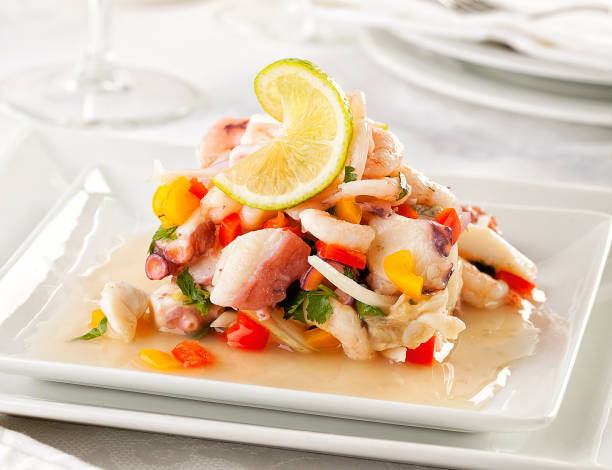

receta destacada  "El ceviche peruano es un plato fresco y sabroso que se prepara con pescado crudo marinado en jugo de limón. Es rápido de hacer y perfecto para días calurosos . Su sabor cítrico y picante lo convierte en uno de los platos más representativos del Perú. ceviche de caiman ingredientes: 500g de pescado fresco 10limones 1 cebolla 1 aji limo sal 1 diente de ajo camote cocido choclo cocido cancha pasos Corta el pescado en cubos medianos y colócalo en un recipiente de vidrio o acero Agrega sal, ajo picado (opcional), el ají y el culantro picado Incorpora el jugo de limón hasta cubrir el pescado. Remueve suavemente Deja marinar por 10 a 15 minutos. El ácido del limón “cocinará” el pescado Añade la cebolla roja en pluma y mezcla suavemente Sirve inmediatamente, acompañado de camote, choclo y cancha